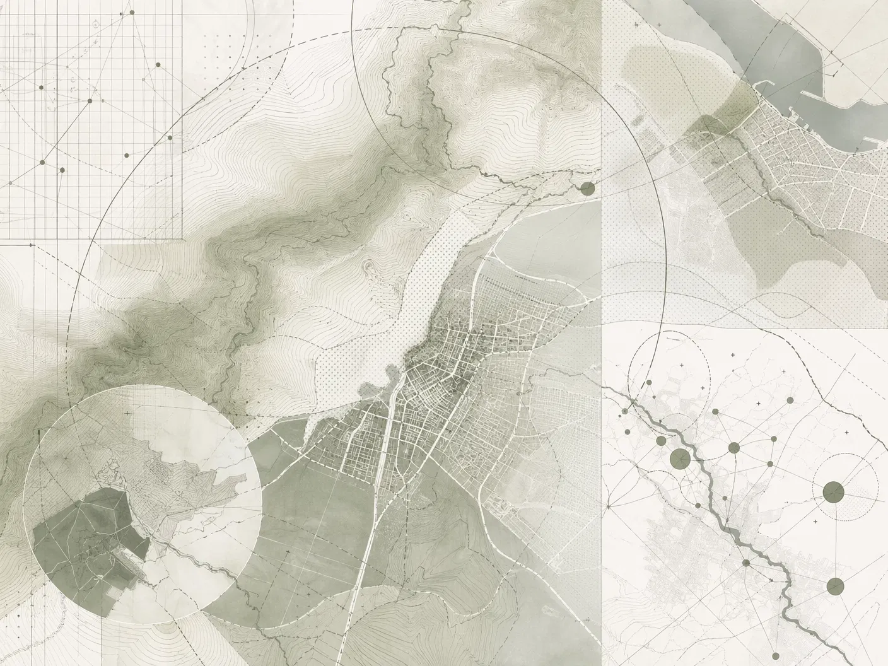

EVALUACIÓN NORMATIVA. FACTIBILIDAD. DESTRABE DE PROYECTOS.
Evaluamos viabilidad. Identificamos rutas posibles. Desbloqueamos proyectos en contextos complejos. Especialista en factibilidad normativa, zonas rurales, subdivisiones y conflictos regulatorios.
AGENDA REUNIÓNSi reconoces alguno de estos escenarios, es probable que necesites evaluación normativa especializada.
Proyecto Detenido por Observaciones Municipales Presenté mi proyecto a la municipalidad y recibí observaciones. No entiendo exactamente por qué rechazaron. ¿Es realmente inviable o hay forma de resolver?
Incertidumbre sobre Viabilidad Normativa Tengo un terreno que quiero desarrollar, pero no sé si es viable según normativa. He consultado con varios profesionales y cada uno dice algo diferente.
Subdivisión en Zona Rural o con Restricciones Quiero subdividir mi propiedad en zona rural. La normativa local tiene restricciones fuertes. ¿Es posible?
Conflicto con Autoridades o Interpretación Normativa La municipalidad rechazó mi proyecto. Creo que están equivocados. ¿Cómo impugno? ¿Tengo argumentos técnicos sólidos?
Terreno Complejo con Múltiples Restricciones Mi terreno tiene varias restricciones: zona rural, limitaciones de acceso, normativa ambiental. ¿Es viable algún proyecto?
No soy un arquitecto diseñador. Mi especialidad es interpretar regulaciones complejas, evaluar factibilidad real y diseñar estrategias para desbloquear proyectos.
-Enfoque técnico: Evaluación normativa profunda, no diseño.
-Reducción de riesgo: Certeza normativa antes de invertir.
-Contextos complejos: Especialista en zonas rurales y restricciones.
"No prometo soluciones mágicas. Prometo análisis profundo, estrategia clara y resultados reales."

Diagnóstico Normativo Integral Evaluación completa de viabilidad normativa. Análisis de instrumentos aplicables (PREMVAL Satélite Borde Costero Sur, PRC, LGUC, OGUC). Identificación de restricciones, conflictos y excepciones. Resultado: Tienes certeza sobre viabilidad.
Tiempo: 2-3 semanas
Estrategia de Destrabe Diseño de estrategia para desbloquear proyectos detenidos. Análisis de rutas posibles. Evaluación de viabilidad de cada ruta. Resultado: Sabes exactamente qué hacer para desbloquear.
Tiempo: Variable
Gestión Institucional Coordinación con autoridades (Seremi de Vivienda y Urbanismo - SEREMI MINVU, Secretaría Comunal de Planificación - SECPLA, Dirección de Obras Municipales - DOM). Preparación de documentación técnica. Seguimiento de expedientes. Resultado: Tu proyecto avanza sin sorpresas.
Tiempo: Variable
Transparente, paso a paso y orientado a resultados. Aquí está exactamente cómo trabajamos.
Este servicio NO es para ti si:
Buscas diseño arquitectónico (eso es otro servicio) Necesitas solución rápida y barata (no existe) Esperas que 'arreglemos' normativa que claramente no permite tu proyecto No estás dispuesto a considerar alternativas o replanteos
Este servicio es para ti si:
Tienes un proyecto detenido o con dudas normativas Necesitas certeza sobre viabilidad antes de invertir Enfrentas conflicto con autoridades Tienes terreno en zona rural o con restricciones Valoras precisión técnica sobre promesas vagas
01 El Cardonal
Subdivisión Predial para Desarrollo Residencial
Proyecto de subdivisión en zona con restricciones normativas. Evaluación de factibilidad, identificación de rutas viables, gestión con autoridades municipales.
Resultado: Subdivisión aprobada. Propietario cuenta con ruta clara para ejecución.
02 El Totoral
Uso y Consolidación del Predio
Análisis de viabilidad para consolidación habitacional con mejoras según normativa vigente. Evaluación de restricciones, definición de estrategia de desarrollo.
Resultado: Proyecto viable con ruta clara de ejecución
03 Huallilemu
Mediación Institucional Compleja
Conflicto de interpretación normativa entre SAG, SEREMI MINVU, MINAGRI y DOM. Mediación técnica, análisis de zonificación PRSBCS, resolución de conflicto.
Resultado: Acuerdo institucional alcanzado. Proyecto desbloqueado con certeza regulatoria.
Clientes que enfrentaban incertidumbre normativa y lograron desbloquear sus proyectos.
"Tenía un proyecto detenido por normativa. Miguel hizo un análisis profundo y encontró una ruta viable que otros no vieron. Proyecto ejecutado sin conflictos." Carlos Rodríguez Inversionista Inmobiliario
"No sabía si mi terreno era viable para subdividir. La evaluación normativa fue clara y precisa. Hoy tengo un proyecto aprobado." Patricia González Propietaria Rural
"Excelente análisis técnico. Redujeron incertidumbre normativa y nos ahorraron meses de gestión. Muy profesional." Roberto Silva Desarrollador Inmobiliario
Agenda una reunión para evaluar la viabilidad de tu proyecto.
Correo
mbduarq@gmail.com
Teléfono
+56 9 4177 1443
Ubicación
El Totoral, El Quisco
Región de Valparaíso, Chile
LinkedIn
Miguel Meza Buzeta
ENVIAR MENSAJE
Nombres
Correo
Mensaje